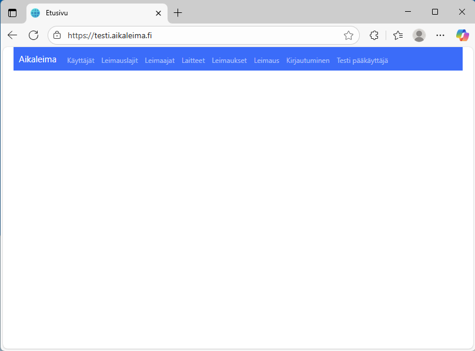

Ylläpito
Sovellus on Blazor Server Side web-sovellus. Eli yksinkertaistettuna perinteinen mainframe-sovellus steroideilla ja graafisena.
Kun käyttäjä painaa jotain painiketta tai klikkaa jotain näytöllä, tieto menee palvelimelle ja käsitellään siellä. Tämän jälkeen työaseman näyttö palautetaan uudelleen muotoiltuna uudella datalla. Eli erittäin tietoturvallinen ratkaisu teknisellä tasolla. Sovelluksen rakenne ja toteutus löytyy
seuraavan linkin takaa sitä mukaa kun sitä ehditään tekemään.
Kuvat ovat kehitysversiosta, joka eroaa testiversiosta jonkin verran ulkoasultaan ja toiminnoiltaan.
Kuvissa on merkitty punaisella korostuksella kehityksen alla olevat toiminnot.
Lähdekoodidokumentaatio
Kirjautuminen
Kun sovellus käynnistyy, se pyytää käyttäjää kirjautumaan ensimmäisellä käyttökerralla. Kirjautumistunnus on testiympäristössä "testi"
ja tuotantoympäristössä asiakaskohtainen tunnus. Kirjautumistoiminnon avulla pääsee laitteella asiakastietojen ylläpitoon.
Kirjautumisavain on kertakäyttöinen ja se syötetään kirjautumisnäytössä. Kirjautuminen aktivoi tunnuksen ja yksilöi laitteen.
Ohjelma käyttää sisäistä mekanismia tiedonsiirron yksilöimiseen selaimen ja palvelimen välillä. Sovelluksesta ei kirjauduta ulos,
joten selainistunto pysyy kirjautuneena. Mikäli sovellus ei toimi ja uudelleenkirjautuminen vaaditaan,
käyttäjän tulee tilata tunnuksen avaus asiakkaan sopiman käytännön mukaisesti.
Kirjautumisavaimen luontitoiminnolla käyttäjä voi kirjautua uudelleen samalla tai toisella laitteella.
Kirjautumistunnus on sidottu selaimeen tai laitteeseen. Samaa tunnusta ei voi myöskään aktivoida toiselle selaimelle tai laitteelle samanaikaiseen käyttöön;
jokaiselle selaimelle tai laitteelle vaaditaan oma tunnus.
Jos kaksivaiheinen tunnistautuminen on käyttäjällä päällä, ohjelman käynnistyessä mahdollisen PIN-koodin syöttämisen jälkeen näytölle tulee ilmoitus "Odotan kirjautumista päätelaitteelta". Käyttäjän pitää silloin mennä leimaussovelluksen kirjautumisvälilehdelle, jossa on ilmoitus "Olet kirjautumassa sovellukseen". Käyttäjän pitää painaa joko "Kirjautuminen" / "Peru kirjautuminen" / "Ilmoita virheellisestä kirjautumisesta" -painiketta.
Tämän jälkeen selainikkunassa oleva sovellus kirjautuu sisään.
Kaksivaiheinen tunnistautuminen
Kotisivu

Kirjautumisen jälkeen avautuu kotisivu. Kotisivulla on linkit eri toimintoihin. Toiminnot on kuvattu alla. Kotisivulle on tavoitteena lisätä tilastoja leimauksista
sekä virhelokien näyttö.
Käyttäjät
 Käyttäjänäytöllä ylläpidetään asiakkaan aikaleimapalvelun ylläpitäjien tietoja. Tyypillisesti 1–2 henkilöä, jotka kirjautuvat omilta työasemiltaan palveluun.
Käyttäjäkohtaisesti voidaan asettaa PIN-koodi suojaamaan kirjautumista. Käyttäjä antaa haluamansa PIN-koodin ensimmäisellä kirjautumisella ja se tallentuu palvelimelle.
Käyttäjänäytöllä ylläpidetään asiakkaan aikaleimapalvelun ylläpitäjien tietoja. Tyypillisesti 1–2 henkilöä, jotka kirjautuvat omilta työasemiltaan palveluun.
Käyttäjäkohtaisesti voidaan asettaa PIN-koodi suojaamaan kirjautumista. Käyttäjä antaa haluamansa PIN-koodin ensimmäisellä kirjautumisella ja se tallentuu palvelimelle.
Sovelluksen käynnistyessä ohjelma kirjautuu selaimen IndexDB-kannassa olevalla kirjautumisavaimella.
Jos kirjautuminen onnistuu ja pin-koodin kysyminen on laitettu käyttäjälle niin ohjelma kysyy vielä käyttäjän PIN-koodin, jolla varmistetaan, että oikea käyttäjä on kirjautumassa.
Töissä törmäsin kaksivaiheisen tunnistautumisen esittelyyn tai MFA:han kuten sitä kutsutaan. Aloin pohtimaan,että miten sen voisi toteuttaa yksinkertaisesti. Ohjelman kuvissa näkyy jo, miten ajattelin sen toteuttaa.
Leimauslajit
 Leimauslajit sisältävät nimitiedon ja asiakkaan järjestelmien mukaisen leimaustietoon liittyvän avaimen. Näin tietojen siirrossa asiakasjärjestelmiin voidaan yksilöidä leimaustapahtuma.
Leimauslajit sisältävät nimitiedon ja asiakkaan järjestelmien mukaisen leimaustietoon liittyvän avaimen. Näin tietojen siirrossa asiakasjärjestelmiin voidaan yksilöidä leimaustapahtuma.
Leimaajat
 Leimaajat sisältävät nimitiedon ja asiakkaan järjestelmien mukaisen leimaajaan liittyvän avaimen. Näin tietojen siirrossa asiakasjärjestelmiin voidaan yksilöidä leimaustapahtuma.
Leimaajat sisältävät nimitiedon ja asiakkaan järjestelmien mukaisen leimaajaan liittyvän avaimen. Näin tietojen siirrossa asiakasjärjestelmiin voidaan yksilöidä leimaustapahtuma.
Laitteet
 Laitteet sisältävät yksilöivän nimitiedon. Laite voi olla henkilökohtainen, kuten puhelinsovellus, jolloin laite kytketään leimaajatiedossa olevaan tietoon.
Laite voi olla yleinen leimauspääte, jolloin leimaustilanteessa täytyy leimaajan syöttää henkilökohtainen avain leimaustapahtuman kohdistamiseksi. Laitteen aikatiedot toimivat leimauksen perusteena.
Laitteet sisältävät yksilöivän nimitiedon. Laite voi olla henkilökohtainen, kuten puhelinsovellus, jolloin laite kytketään leimaajatiedossa olevaan tietoon.
Laite voi olla yleinen leimauspääte, jolloin leimaustilanteessa täytyy leimaajan syöttää henkilökohtainen avain leimaustapahtuman kohdistamiseksi. Laitteen aikatiedot toimivat leimauksen perusteena.
Laitteelle voidaan myös kytkeä GPS-asetus päälle, jolloin leimaustilanteessa tallennetaan leimauksen yhteyteen myös koordinaatit. Ohjelma kysyy oikeutta sijaintitiedon käyttöön ensimmäisellä kerralla selaimessa ja puhelimessa.
Laitteeseen voidaan kytkeä käyttäjä, jolloin seurauksena on, että käyttäjällä aktivoituu kaksivaiheinen tunnistautuminen. Siitä tarkemmin kirjautumiskohdassa.
Leimaukset
Listassa näkyy sijaintitieto ja malliksi nyt lisätty linkki Google Mapsiin. Maps kuvasta jo näkee, että selaimen antama sijainti ei ole tarkka, mutta puhelimen GPS-tieto on tarkka.
Leimaus
 Sovelluksella voidaan tehdä myös leimaus. Silloin kuitenkin tulee kirjautua leimaustunnuksella, joka on eri kuin ylläpidon tunnus.
Jos laite on yleinen leimauspääte, tulee leimaajan syöttää henkilökohtainen avain leimaustapahtuman kohdistamiseksi. Sopivilla lisälaitteilla
voidaan käyttää myös viivakoodinlukijaa, vaikkapa henkilökortista viivakoodin lukemiseen, tai RFID-lukijaa sirulta leimaajan tunnistamiseen.
Sovelluksella voidaan tehdä myös leimaus. Silloin kuitenkin tulee kirjautua leimaustunnuksella, joka on eri kuin ylläpidon tunnus.
Jos laite on yleinen leimauspääte, tulee leimaajan syöttää henkilökohtainen avain leimaustapahtuman kohdistamiseksi. Sopivilla lisälaitteilla
voidaan käyttää myös viivakoodinlukijaa, vaikkapa henkilökortista viivakoodin lukemiseen, tai RFID-lukijaa sirulta leimaajan tunnistamiseen.